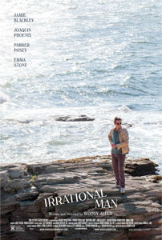
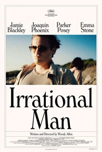
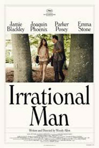
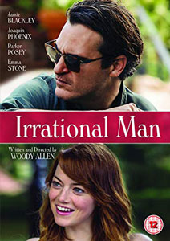

|
||||
Irrational Man (2015) |
||||
Director |
- |
Woody Allen | ||
Producers |
- |
Letty Aronson Helen Robin Stephen Tenenbaum Jack Rollins |
||
Screenplay |
- |
Woody Allen |
||
Cinematography |
- |
Darius Khondji | ||
Production Designer |
- |
Santo Loquasto | ||
Costume Designer |
- |
Suzy Benzinger | ||
Editor |
- |
Alisa Lepselter | ||
Cast |
||||
Abe Lucas |
- |
Joaquin Phoenix | ||
Jill Pollard |
- |
Emma Stone | ||
Rita Richards |
- |
Parker Posey | ||
Paul Richards |
- |
Robert Petkoff | ||
Roy |
- |
Jamie Blackley | ||
Mrs. Pollard, Jill's mother |
- |
Betsey Aidem | ||
Mr. Pollard, Jill's father |
- |
Ethan Phillips | ||
April |
- |
Sophie von Haselberg | ||
April's friend |
- |
Ben Rosenfield | ||
April’s friend |
- |
Meredith Hagner | ||
Carol |
- |
Susan Pourfar | ||
Judge Spangler |
- |
Tom Kemp | ||
Ellie Tanner |
- |
Kate McGonigle | ||
Plot |
||||
At the small-town fictional New England college campus of Braylin, philosophy professor Abe Lucas (Joaquin Phoenix) is experiencing an existential crisis. He is depressed, sees no meaning in his life, and drinks excessively. Despite this, he immediately catches the eye of two women: chemistry professor Rita Richards (Parker Posey), and Jill Pollard (Emma Stone), one of his students. Jill has a serious boyfriend and lives with her parents. Rita lives with her husband, but is dissatisfied with her marriage. Abe chooses to sleep with Rita but is careful to have only a platonic relationship with Jill. Abe's depression becomes even more apparent when he fails to have an erection during his first sexual experience with Rita. At lunch, Abe and Jill overhear a conversation; a woman says she will lose her children in a custody battle because of a seemingly unethical judge in family court. Abe is troubled by the injustice and, without telling Jill, decides to help the woman by murdering the judge. Abe reasons he's unlikely to be caught because he isn't involved in the case and, therefore, won't be suspected. Abe steals a key to the college's chemistry lab from Rita where he procures cyanide. He then discovers one of the judge's routines: a morning jog followed by sipping a cup of orange juice on a park bench. Abe puts the poison in an identical cup and exchanges the cups surreptitiously while the judge is reading a newspaper. The Judge subsequently dies from cyanide poisoning. Abe feels reborn. He tells himself that he has finally done something worthwhile with his life by ridding the world of one evil man. Consequently, his mood improves dramatically. Abe and Jill's friendship blossoms into a romance. Jill's boyfriend, Roy (Jamie Blackley), eventually learns of the relationship with Abe and breaks up with her. Despite Abe's careful planning, Jill and Rita, who are friendly, begin to suspect Abe's involvement in the murder after piecing together a few clues, such as the missing key and Abe's unexpected presence in the chemistry lab where a student spotted him. Rita decides that even if he is guilty, she wants to leave her husband and live with Abe in Europe. Consumed with curiosity, Jill enters Abe's house through an open window while he's out and finds incriminating notes. Jill confronts Abe and accuses him of the murder. Abe then admits his guilt and explains his motive. Jill decides to break off their relationship but promises not to turn him in. However, after an innocent man is accused of the crime, she presses Abe to go to the police, warning him that otherwise she will report him. Abe, who has only recently started enjoying life, is determined to stay out of jail. He attempts to kill Jill by pushing her into an elevator shaft, but, instead, he stumbles backward and falls down the shaft to his death. Jill then begins repairing her life. Her first step is to reconcile with Roy. The film ends with Jill gazing out to sea while standing on a beach and reflecting on her experiences with Abe. |
||||
Filming |
||||
Abe Lucas (Joaquin Phoenix) previously taught philosophy at the fictional Adair University. This is the same university from which Harry Block (Woody Allen) was expelled and subsequently honoured by in Deconstructing Harry (1997) and where Sondra Pransky (Scarlett Johansson) studied journalism in Scoop (2006). This marks Woody Allen's fourth film which borrows themes from the 1866 novel Crime and Punishment by Fyodor Dostoevsky, after Crimes and Misdemeanors (1989), Match Point (2005) and Cassandra's Dream (2007). Joaquin Phoenix gained 33 pounds for the role. In the book "Start to Finish: Woody Allen and the Art of Moviemaking" long-time Allen chronicler Eric Lax shadowed him through the making of Irrational Man (2015). He wrote that Allen doesn't rehearse or prepare. He does the minimum number of takes and camera setups, never does reshoots, and likes to be finished by six every evening. He barely gives his actors any instructions at all. [The Guardian, Feb.2018] |
||||
Filming Locations |
||||
- Salve Regina University, 52 Ochre Point Avenue, Newport, Rhode Island (as Braylin College campus); - Chez Pascal 960 Hope Street, Providence, Rhode Island (cafe); - Lippitt Park, 1015 Hope Street, Providence, Rhode Island (park where judge Spangler goes jogging every morning); - Pawtucket, Rhode Island (Abe reading newspaper headlines at a stand on High St); - West Side Diner, 1380 Westminster Street, Providence, Rhode Island (place where Abe and Jill overhear a conversation about "evil" judge Spangler); - Outside the Island Books bookshop, 135 Spring Street, Newport, Rhode Island (exterior scene, Jill meeting Ellie); - Federal Building, Kennedy Plaza, Providence, Rhode Island (courthouse where judge Spangler works); - Beavertail National Park, Jamestown, Rhode Island (rocky seashore, Jill and Abe walking by the lighthouse); - Providence Athenaeum, Benefit Street, Providence, Rhode Island (library scenes, faculty meeting); - Loie Fuller's, 1455 Westminster St., Providence, Rhode Island (restaurant where Abe and Jill "celebrate" Judge Spengler's death). |
||||
Quotes |
||||
"Life's ironic isn't it? One day a person has a morass of complicated, unsolvable problems then in the batting of an eye, dark clouds part and she can enjoy a decent life again. It's just astounding." "So much of philosophy is just verbal masturbation." |
||||
Music |
||||
The 'In' Crowd |
- |
Ramsey Lewis Trio | ||
Good To Go |
- |
Daniel May Jazz Combo | ||
Amalthea |
- |
Michael Ballou | ||
Cut Loose Mix II |
- |
Michael Ballou | ||
Look-A-Here |
- |
Ramsey Lewis Trio | ||
J.S. Bach - Prelude & Fugue No. 2 in C Minor |
- |
Bernard Roberts | ||
Let Me Call You Sweetheart |
- |
Paul Eakins | ||
Over the Waves |
- |
Paul Eakins | ||
J.S. Bach - Prelude & Fugue No. 18 in G Sharp Minor |
- |
Bernard Roberts | ||
Wade in the Water |
- |
Ramsey Lewis Trio | ||
Darn That Dream |
- |
The Jimmy Bruno Trio | ||
J.S. Bach - Cello Suite No. 1 in G Major |
- |
Torleif Thedeen | ||
Angel In the Snow |
- |
David O'Neal |
||
Reviews |
||||
"Irrational Man may prove rewarding for the most ardent Joaquin Phoenix fans or Woody Allen apologists, but all others most likely need not apply." - Rotten Tomatoes "Irrational Man is turgid to the point of ridiculousness and absurdly anachronistic ..." - Sophie Gilbert : The Atlantic |
||||
Additional Artwork |
||||
  |
||||
  |
||||